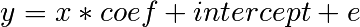
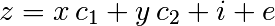
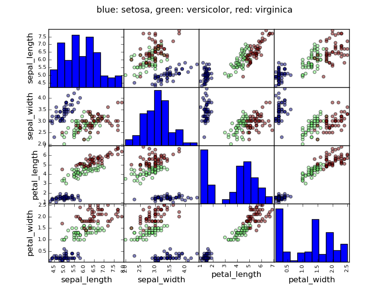

Materials for the “Statistics in Python” euroscipy 2015 tutorial.
Requirements
To install Python and these dependencies, we recommend that you download Anaconda Python, or use Ubuntu’s package manager.
Tip
Why Python for statistics?
R is a language dedicated to statistics. Python is a general purpose language with statistics module. R has more statistical analysis features than Python, and specialized syntaxes. However, when it comes to building complex analysis pipelines that mix statistics with e.g. image analysis, text mining, or control of a physical experiment, the richness of Python is an invaluable asset.
Contents
Tip
In this document, the Python prompts are represented with the sign “>>>”. To copy-paste code, you can click on the top right of the code blocks, to hide the prompts and the outputs.
The setting that we consider for statistical analysis is that of multiple observations or samples described by a set of different attributes or features. The data can than be seen as a 2D table, or matrix, with columns given the different attributes of the data, and rows the observations. For instance, the data contained in examples/brain_size.csv:
"";"Gender";"FSIQ";"VIQ";"PIQ";"Weight";"Height";"MRI_Count"
"1";"Female";133;132;124;"118";"64.5";816932
"2";"Male";140;150;124;".";"72.5";1001121
"3";"Male";139;123;150;"143";"73.3";1038437
"4";"Male";133;129;128;"172";"68.8";965353
"5";"Female";137;132;134;"147";"65.0";951545
Tip
We will store and manipulate this data in a pandas.DataFrame, from the pandas module. It is the Python equivalent of the spreadsheet table. It is different from a 2D numpy array as it has named columns, can contained a mixture of different data types by column, and has elaborate selection and pivotal mechanisms.
Reading from a CSV file: Using the above CSV file that gives observations of brain size and weight and IQ (Willerman et al. 1991), the data are a mixture of numerical and categorical values:
>>> import pandas
>>> data = pandas.read_csv('examples/brain_size.csv', sep=';', na_values=".")
>>> data
Unnamed: 0 Gender FSIQ VIQ PIQ Weight Height MRI_Count
0 1 Female 133 132 124 118 64.5 816932
1 2 Male 140 150 124 NaN 72.5 1001121
2 3 Male 139 123 150 143 73.3 1038437
3 4 Male 133 129 128 172 68.8 965353
4 5 Female 137 132 134 147 65.0 951545
...
Warning
Missing values
The weight of the second individual is missing in the CSV file. If we don’t specify the missing value (NA = not available) marker, we will not be able to do statistical analysis.
Creating from arrays:: data-frames can also be seen as a dictionary of 1D ‘series’, eg arrays or lists. If we have 3 numpy arrays:
>>> import numpy as np
>>> t = np.linspace(-6, 6, 20)
>>> sin_t = np.sin(t)
>>> cos_t = np.cos(t)
We can expose them as a pandas dataframe:
>>> pandas.DataFrame({'t': t, 'sin': sin_t, 'cos': cos_t})
cos sin t
0 0.960170 0.279415 -6.000000
1 0.609977 0.792419 -5.368421
2 0.024451 0.999701 -4.736842
3 -0.570509 0.821291 -4.105263
4 -0.945363 0.326021 -3.473684
5 -0.955488 -0.295030 -2.842105
6 -0.596979 -0.802257 -2.210526
7 -0.008151 -0.999967 -1.578947
8 0.583822 -0.811882 -0.947368
...
Other inputs: pandas can input data from SQL, excel files, or other formats. See the pandas documentation.
data is a pandas dataframe, that resembles R’s dataframe:
>>> data.shape # 40 rows and 8 columns
(40, 8)
>>> data.columns # It has columns
Index([u'Unnamed: 0', u'Gender', u'FSIQ', u'VIQ', u'PIQ', u'Weight', u'Height', u'MRI_Count'], dtype='object')
>>> print data['Gender'] # Columns can be addressed by name
0 Female
1 Male
2 Male
3 Male
4 Female
...
>>> # Simpler selector
>>> data[data['Gender'] == 'Female']['VIQ'].mean()
109.45
Note
For a quick view on a large dataframe, use its describe method: pandas.DataFrame.describe().
groupby: splitting a dataframe on values of categorical variables:
>>> groupby_gender = data.groupby('Gender')
>>> for gender, value in groupby_gender['VIQ']:
... print gender, value.mean()
Female 109.45
Male 115.25
groupby_gender is a powerfull object that exposes many operations on the resulting group of dataframes:
>>> groupby_gender.mean()
Unnamed: 0 FSIQ VIQ PIQ Weight Height MRI_Count
Gender
Female 19.65 111.9 109.45 110.45 137.200000 65.765000 862654.6
Male 21.35 115.0 115.25 111.60 166.444444 71.431579 954855.4
(use tab-completion on groupby_gender to find more).
Exercise
What is the mean value for VIQ for the full population?
How many males/females were included in this study?
Hint use ‘tab completion’ to find out the methods that can be called, instead of ‘mean’ in the above example.
What is the average value of MRI counts expressed in log units, for males and females?
Note
groupby_gender.boxplot is used for the plots above (see this example).
Pandas comes with some plotting tools (that use matplotlib behind the scene) to display statistics of the data in dataframes:
Scatter matrices:
>>> from pandas.tools import plotting
>>> plotting.scatter_matrix(data[['Weight', 'Height', 'MRI_Count']])
>>> plotting.scatter_matrix(data[['PIQ', 'VIQ', 'FSIQ']])
Exercise
Plot the scatter matrix for males only, and for females only. Do you think that the 2 sub-populations correspond to gender?
For simple statistical tests, we will use the stats sub-module of scipy:
>>> from scipy import stats
See also
Scipy is a vast library. For a tutorial covering the whole scope of scipy, see http://scipy-lectures.github.io/
scipy.stats.ttest_1samp() tests if observations are drawn from a Gaussian distributions of given population mean. It returns the T statistic, and the p-value (see the function’s help):
>>> stats.ttest_1samp(data['VIQ'], 0)
(array(30.088099970...), 1.32891964...e-28)
Tip
With a p-value of 10^-28 we can claim that the population mean for the IQ (VIQ measure) is not 0.

Exercise
Is the test performed above one-sided or two-sided? Which one should we use, and what is the corresponding p-value?
We have seen above that the mean VIQ in the male and female populations were different. To test if this is significant, we do a 2-sample t-test with scipy.stats.ttest_ind():
>>> female_viq = data[data['Gender'] == 'Female']['VIQ']
>>> male_viq = data[data['Gender'] == 'Male']['VIQ']
>>> stats.ttest_ind(female_viq, male_viq)
(array(-0.77261617232...), 0.4445287677858...)

PIQ, VIQ, and FSIQ give 3 measures of IQ. Let us test if FISQ and PIQ are significantly different. We need to use a 2 sample test:
>>> stats.ttest_ind(data['FSIQ'], data['PIQ'])
(array(0.46563759638...), 0.64277250...)
The problem with this approach is that it forgets that there are links between observations: FSIQ and PIQ are measured on the same individuals. Thus the variance due to inter-subject variability is confounding, and can be removed, using a “paired test”, or “repeated measures test”:
>>> stats.ttest_rel(data['FSIQ'], data['PIQ'])
(array(1.784201940...), 0.082172638183...)
This is equivalent to a 1-sample test on the difference:
>>> stats.ttest_1samp(data['FSIQ'] - data['PIQ'], 0)
(array(1.784201940...), 0.082172638...)
T-tests assume Gaussian errors. We can use a Wilcoxon signed-rank test, that relaxes this assumption:
>>> stats.wilcoxon(data['FSIQ'], data['PIQ'])
(274.5, 0.106594927...)
Note
The corresponding test in the non paired case is the Mann–Whitney U test, scipy.stats.mannwhitneyu().
Exercice
Given two set of observations, x and y, we want to test the hypothesis that y is a linear function of x. In other terms:

where e is observation noise. We will use the statmodels module to:
First, we generate simulated data according to the model:
>>> import numpy as np
>>> x = np.linspace(-5, 5, 20)
>>> np.random.seed(1)
>>> # normal distributed noise
>>> y = -5 + 3*x + 4 * np.random.normal(size=x.shape)
>>> # Create a data frame containing all the relevant variables
>>> data = pandas.DataFrame({'x': x, 'y': y})
Then we specify an OLS model and fit it:
>>> from statsmodels.formula.api import ols
>>> model = ols("y ~ x", data).fit()
We can inspect the various statistics derived from the fit:
>>> print(model.summary())
OLS Regression Results
==============================================================================
Dep. Variable: y R-squared: 0.804
Model: OLS Adj. R-squared: 0.794
Method: Least Squares F-statistic: 74.03
Date: ... Prob (F-statistic): 8.56e-08
Time: ... Log-Likelihood: -57.988
No. Observations: 20 AIC: 120.0
Df Residuals: 18 BIC: 122.0
Df Model: 1
==============================================================================
coef std err t P>|t| [95.0% Conf. Int.]
------------------------------------------------------------------------------
Intercept -5.5335 1.036 -5.342 0.000 -7.710 -3.357
x 2.9369 0.341 8.604 0.000 2.220 3.654
==============================================================================
Omnibus: 0.100 Durbin-Watson: 2.956
Prob(Omnibus): 0.951 Jarque-Bera (JB): 0.322
Skew: -0.058 Prob(JB): 0.851
Kurtosis: 2.390 Cond. No. 3.03
==============================================================================
Exercise
Retrieve the estimated parameters from the model above. Hint: use tab-completion to find the relevent attribute.
Let us go back the data on brain size:
>>> data = pandas.read_csv('examples/brain_size.csv', sep=';', na_values=".")
We can write a comparison between IQ of male and female using a linear model:
>>> model = ols("VIQ ~ Gender + 1", data).fit()
>>> print(model.summary())
OLS Regression Results
==============================================================================
Dep. Variable: VIQ R-squared: 0.015
Model: OLS Adj. R-squared: -0.010
Method: Least Squares F-statistic: 0.5969
Date: ... Prob (F-statistic): 0.445
Time: ... Log-Likelihood: -182.42
No. Observations: 40 AIC: 368.8
Df Residuals: 38 BIC: 372.2
Df Model: 1
=======================================================================...
coef std err t P>|t| [95.0% Conf. Int.]
-----------------------------------------------------------------------...
Intercept 109.4500 5.308 20.619 0.000 98.704 120.196
Gender[T.Male] 5.8000 7.507 0.773 0.445 -9.397 20.997
=======================================================================...
Omnibus: 26.188 Durbin-Watson: 1.709
Prob(Omnibus): 0.000 Jarque-Bera (JB): 3.703
Skew: 0.010 Prob(JB): 0.157
Kurtosis: 1.510 Cond. No. 2.62
=======================================================================...
Note
Tips on specifying model
Forcing categorical the ‘Gender’ is automatical detected as a categorical variable, and thus each of its different values are treated as different entities.
An integer column can be forced to be treated as categorical using:
>>> model = ols('VIQ ~ C(Gender)', data).fit()
Intercept We can remove the intercept using - 1 in the formula, or force the use of an intercept using + 1.
Link to t-tests between different FSIQ and PIQ
To compare different type of IQ, we need to create a “long-form” table, listing IQs, where the type of IQ is indicated by a categorical variable:
>>> data_fisq = pandas.DataFrame({'iq': data['FSIQ'], 'type': 'fsiq'})
>>> data_piq = pandas.DataFrame({'iq': data['PIQ'], 'type': 'piq'})
>>> data_long = pandas.concat((data_fisq, data_piq))
>>> print(data_long)
iq type
0 133 fsiq
1 140 fsiq
2 139 fsiq
...
31 137 piq
32 110 piq
33 86 piq
...
>>> model = ols("iq ~ type", data_long).fit()
>>> print(model.summary())
OLS Regression Results
...
=======================================================================...
coef std err t P>|t| [95.0% Conf. Int.]
-----------------------------------------------------------------------...
Intercept 113.4500 3.683 30.807 0.000 106.119 120.781
type[T.piq] -2.4250 5.208 -0.466 0.643 -12.793 7.943
...
We can see that we retrieve the same values for t-test and corresponding p-values for the effect of the type of iq than the previous t-test:
>>> stats.ttest_ind(data['FSIQ'], data['PIQ'])
(array(0.46563759638...), 0.64277250...)
Consider a linear model explaining a variable z (the dependent variable) with 2 variables x and y:

Such a model can be seen in 3D as fitting a plane to a cloud of (x, y, z) points.
Example: the iris data
>>> data = pandas.read_csv('examples/iris.csv')
>>> model = ols('sepal_width ~ name + petal_length', data).fit()
>>> print(model.summary())
OLS Regression Results
==============================================================================
Dep. Variable: sepal_width R-squared: 0.478
Model: OLS Adj. R-squared: 0.468
Method: Least Squares F-statistic: 44.63
Date: ... Prob (F-statistic): 1.58e-20
Time: ... Log-Likelihood: -38.185
No. Observations: 150 AIC: 84.37
Df Residuals: 146 BIC: 96.41
Df Model: 3
===============================================================================...
coef std err t P>|t| [95.0% Conf. Int.]
-------------------------------------------------------------------------------...
Intercept 2.9813 0.099 29.989 0.000 2.785 3.178
name[T.versicolor] -1.4821 0.181 -8.190 0.000 -1.840 -1.124
name[T.virginica] -1.6635 0.256 -6.502 0.000 -2.169 -1.158
petal_length 0.2983 0.061 4.920 0.000 0.178 0.418
==============================================================================
Omnibus: 2.868 Durbin-Watson: 1.753
Prob(Omnibus): 0.238 Jarque-Bera (JB): 2.885
Skew: -0.082 Prob(JB): 0.236
Kurtosis: 3.659 Cond. No. 54.0
==============================================================================
In the above iris example, we wish to test if the petal length is different between versicolor and virginica, after removing the effect of sepal width. This can be formulated as testing the difference between the coefficient associated to versicolor and virginica in the linear model estimated above (it is an Analysis of Variance, ANOVA). For this, we write a vector of ‘contrast’ on the parameters estimated: we want to test “name[T.versicolor] - name[T.virginica]”, with an ‘F-test’:
>>> print(model.f_test([0, 1, -1, 0]))
<F test: F=array([[ 3.24533535]]), p=[[ 0.07369059]], df_denom=146, df_num=1>
Is this difference significant?
Exercice
Going back to the brain size + IQ data, test if the VIQ of male and female are different after removing the effect of brain size, height and weight.